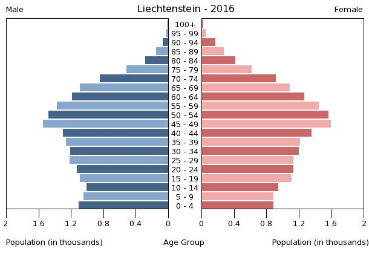

Liechtenstein's total median age is 44.4 years with 42.4 years for males and 46.1 years for females. While the total population growth rate is 0.68%, with a 14.6% urban population. The total life expectancy at birth is 83 years, while the total school life expectancy is 15 years. 100% of Liechtenstein's population has access to sanitation facilities. Liechtenstein is also under a constitutional monarchy, with 97% of its population has access to internet, and having 0 airports